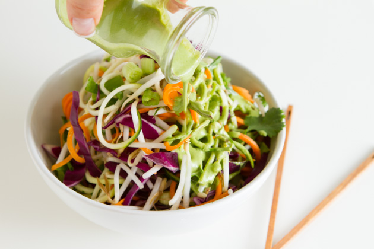

Ingredients:
Salad
1 large zucchini, spiralized
1 small carrot, spiralized
handful bean sprouts
1 cup sliced purple cabbage
3 green onions, chopped
2 tablespoon fresh cilantro, chopped
juice from 1/2 lime
Dressing
1 teaspoon sunflower seed butter
1 teaspoon water
1 tablespoon fresh lime juice
1/2 teaspoon gluten-free soy sauce or wheat-free tamari or coconut aminos (for a soy-free option)
2 tablespoons fresh cilantro
1/4 small jalapeño, chopped
small clove garlic, minced
Directions:
- Add all salad ingredients to a large bowl. If you do not have a spiralizer, you can either use a cheese grater to prepare the zucchini and carrot or, use a vegetable peeler and just continue to peel the vegetable, using the long ribbons for the salad.
- Add all dressing ingredients to the jug of your small blender and blend until smooth, about 30 seconds.
- Pour the dressing over the vegetables, stir to coat, and serve!